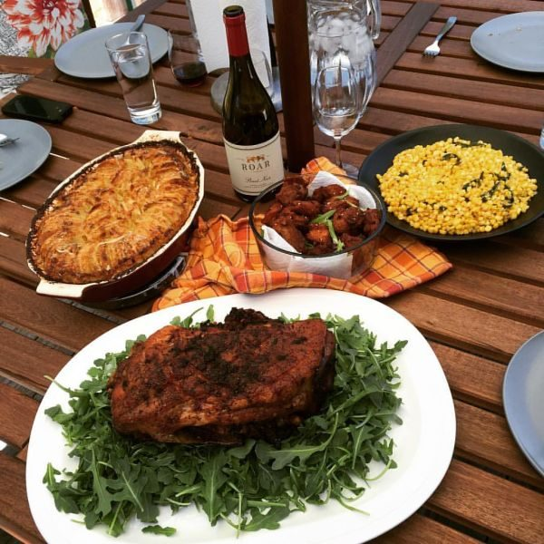

Cheesy Potato Casserole
Makes 8 servings

Photo: the foodhoe (CC BY-SA 2.0)
A baked casserole of cubed potatoes bound with sour cream and cream of chicken soup, mixed with cheddar cheese and topped with buttered herbed stuffing mix.
Directions
- Cook potatoes in boiling water to cover 30 minutes or until tender. Drain; let cool to touch. Peel and cut into 1/4 inch strips; set aside.
- Combine 1/4 cup butter and next 5 ingredients in a large bowl; gently stir in potatoes and cheese. Spoon into a lightly greased 13 x 9 x 2 in baking dish. Combine 3 tablespoons butter and stuffing mix; sprinkle over potato mixture. Bake, uncovered, at 350 degrees for 25 minutes or until thoroughly heated.
- Cook the potatoes in boiling water to cover for 30 minutes, or until tender. Drain and let cool to the touch. Peel and cut into 1/4-inch strips; set aside.
- In a large bowl, combine the 1/4 cup melted butter, chopped onion, salt, pepper, sour cream, and undiluted cream of chicken soup. Gently stir in the potatoes and cheese.
- Spoon the mixture into a lightly greased 13 x 9 x 2-inch baking dish.
- Combine the 3 tablespoons melted butter with the stuffing mix; sprinkle over the potato mixture.
- Bake, uncovered, at 350 degrees for 25 minutes, or until thoroughly heated.
Goes well with
https://lizotte.cool/recipe/cheesy-potato-casserole.html